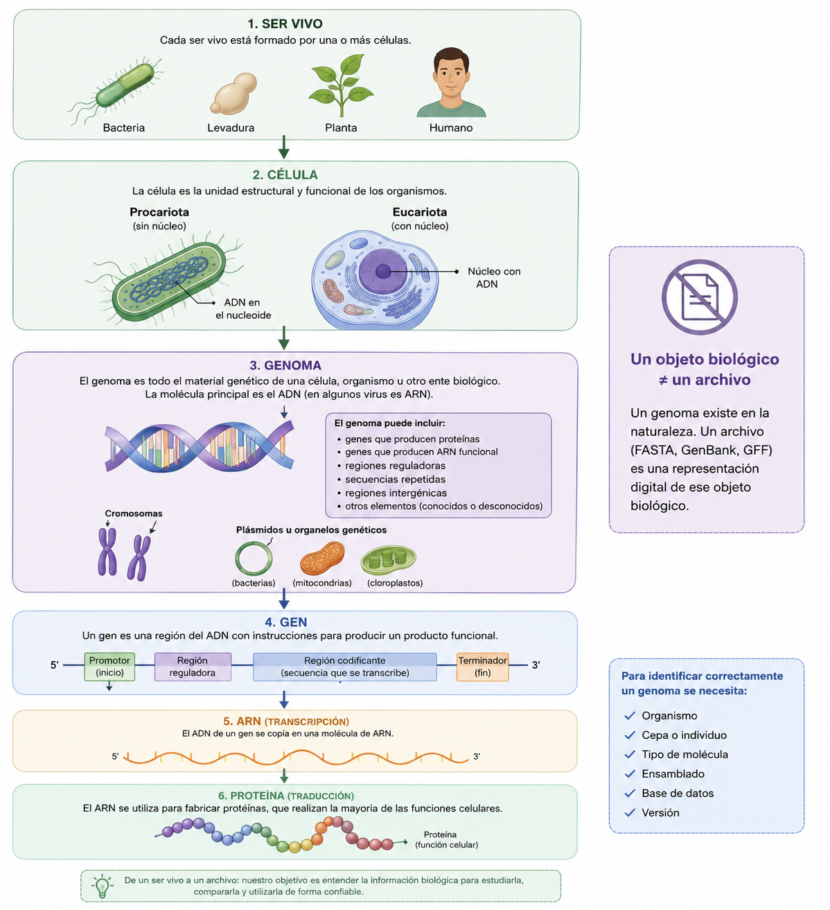
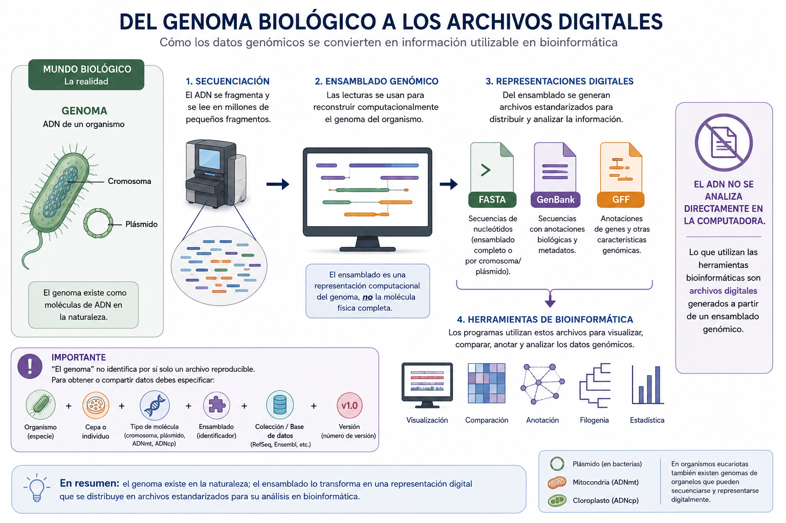
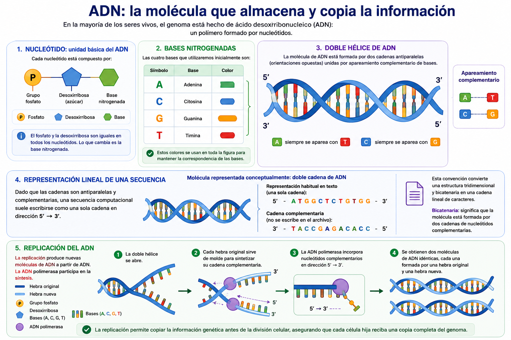
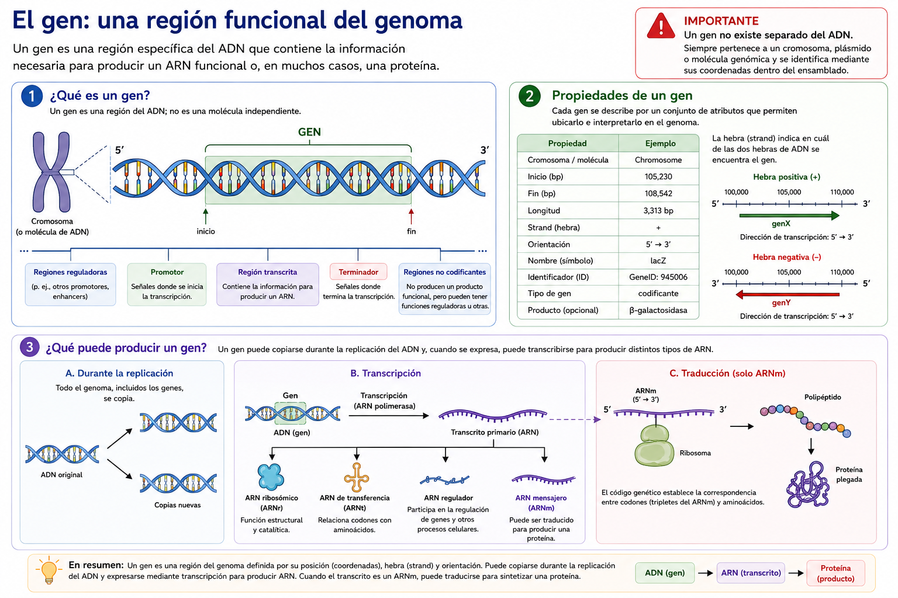
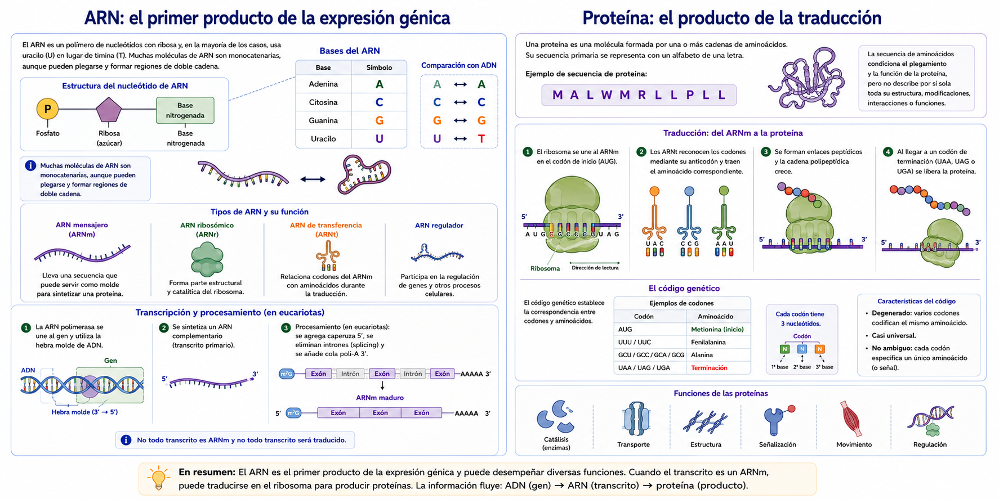
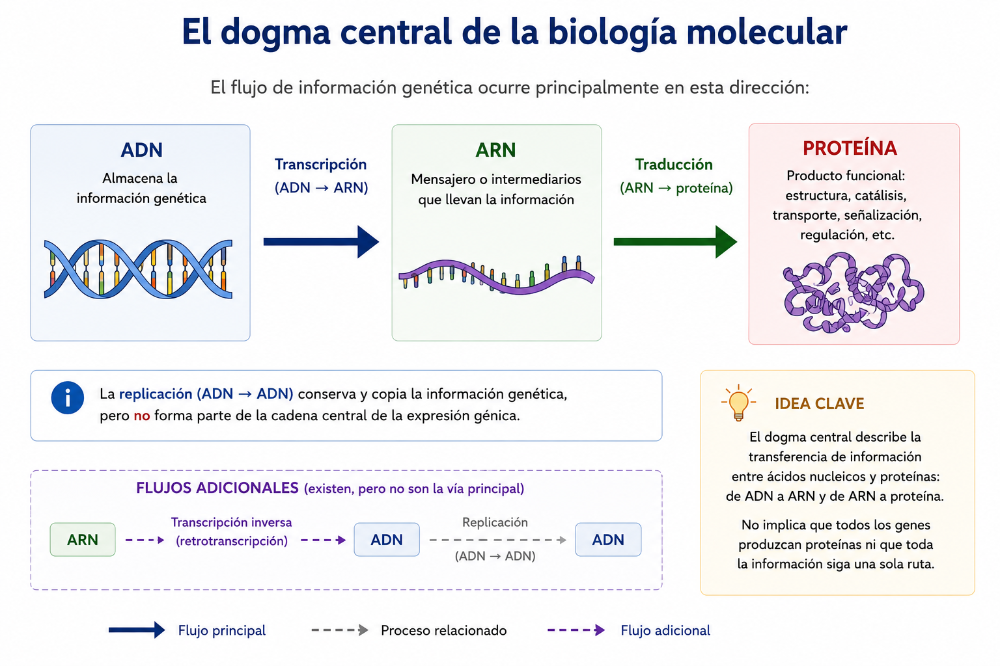
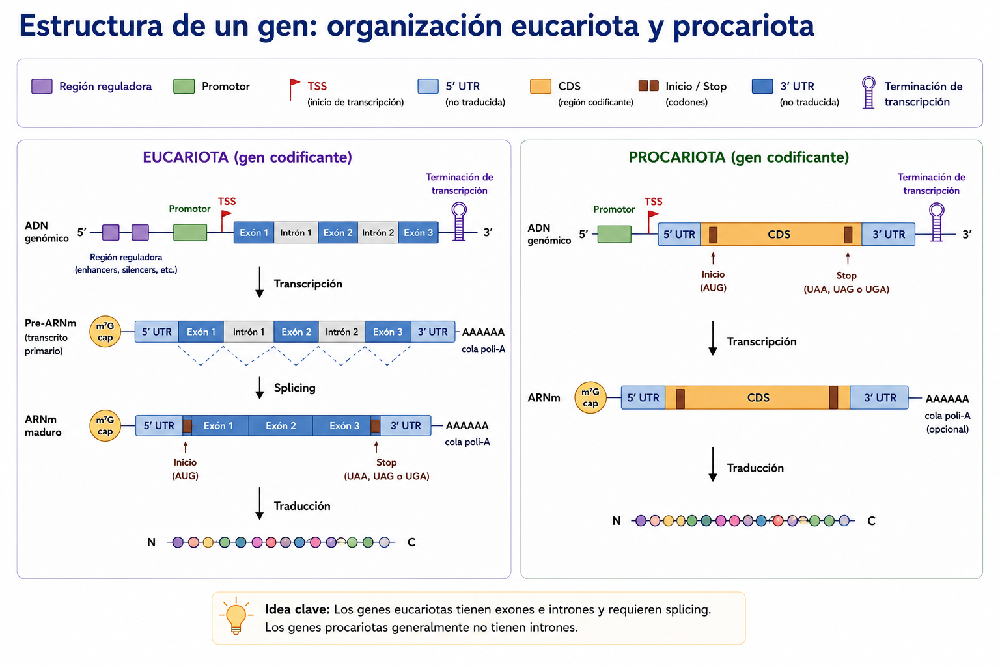
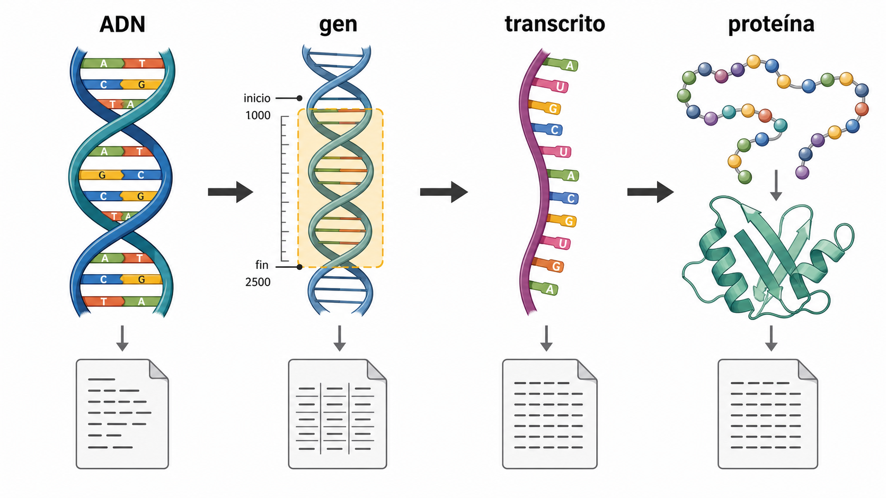
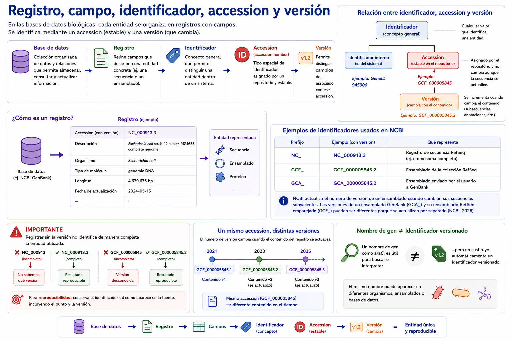
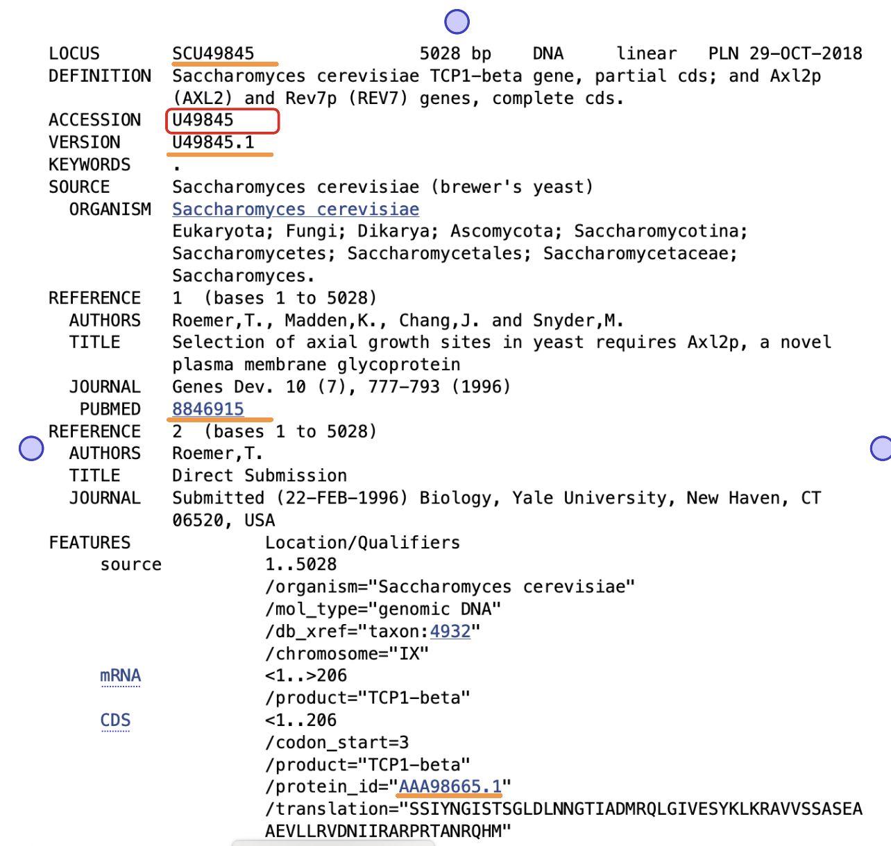

S7 — Representar: de los objetos biológicos a FASTA, GFF3 y GenBank
Antes de clase lee las secciones marcadas como indispensables y realiza el primer intento sin IA. Lleva tu matriz objeto–evidencia–formato y las dudas que no pudiste resolver. Durante el taller trabajarás con fragmentos y registros reales, compararás tu razonamiento y corregirás la matriz. Después integrarás la selección provisional de datos en doc/protocolo.md. El primer intento es formativo: importa que muestre tu razonamiento inicial, aunque contenga errores corregibles.
Ficha del módulo
| Elemento | Descripción |
|---|---|
| Sesión | S7, 2 horas |
| Unidad | U3. Datos y bases de datos biológicas |
| Competencia principal | C. Manejo de datos y bases de datos biológicas |
| Competencias integradas | A. Documentación reproducible; G. uso responsable de IA en el cierre posterior |
| Propósito | Comprender la base biológica que relaciona genomas, genes, transcritos y proteínas; distinguir estos objetos de sus representaciones computacionales e interpretar FASTA, GFF3 y GenBank |
| Consulta previa del Plan | Material clásico L4, diapositivas 1–31; este módulo lo sustituye como lectura autocontenida |
| Lectura indispensable | Secciones 1–6 y Práctica 1 de este módulo, 75–90 min |
| Lectura de consulta | Sección 7 y documentación oficial enlazada, 15–20 min |
| Primer intento | Test de repaso (procesos, elementos, alfabetos) + matriz objeto–pregunta–evidencia–formato, 35–45 min |
| Evidencia | Matriz corregida y selección provisional de un conjunto de datos |
| Tarea numerada | Ninguna; el Plan inicia la Tarea 4 en S8 |
Relación con lo que ya sabes
En U1 partiste de una pregunta y aprendiste que los datos necesitan procedencia, metadatos y una ubicación estable. En U2 construiste data/source/, aprendiste a reconocer archivos, conservar originales y comprobar integridad. En esta sesión darás el siguiente paso: decidir qué datos necesitas antes de decidir cómo descargarlos o qué comando utilizar.
El orden de razonamiento será siempre:
pregunta → evidencia → datos → operación → herramientaEmpezar con “¿qué comando uso?” puede producir una respuesta técnicamente válida para el archivo equivocado. Primero determina qué representa el dato y si aporta la evidencia que necesita tu pregunta.
Resultados de aprendizaje
Al finalizar la sesión podrás:
- Explicar y distinguir genoma, ADN, gen, transcrito, ARN, proteína, secuencia y anotación.
- Diferenciar objeto biológico, registro de base de datos y archivo descargable.
- Explicar la función de un identificador, un accession y una versión.
- Interpretar los componentes esenciales de FASTA, GFF3 y GenBank.
- Seleccionar el formato apropiado para una evidencia concreta y justificar sus limitaciones.
- Registrar una selección provisional de datos sin inventar metadatos ausentes.
Preparación previa o preflight
Antes de comenzar confirma:
No necesitas descargar un genoma antes del taller. En esta sesión primero aprenderás a interpretar los registros y formatos; la descarga verificable se realizará en S8.
Ruta de S7
| Momento | Actividad | Producto | Tiempo estimado |
|---|---|---|---|
| Antes de clase | Leer secciones 1–7 | Notas y dudas | 75–90 min |
| Antes de clase | Práctica 1 y matriz inicial | Test de repaso + matriz | 35–45 min |
| Taller | Recuperación y comparación del primer intento | Matriz corregida | 15 min |
| Taller | Prácticas 2–5 con fragmentos y registro | Evidencias anotadas | 85 min |
| Taller | Selección provisional y semáforo | Acuerdo de datos | 20 min |
| Después | Actualizar doc/protocolo.md |
Registro reproducible | 20–30 min |
1. Un objeto biológico no es lo mismo que un archivo [Indispensable]
Antes de hablar de archivos conviene recorrer, con calma, de dónde viene la información que esos archivos representan. El recorrido de esta sección sigue un solo hilo: de un ser vivo a sus células, de la célula a su genoma, del genoma a un gen, del gen a un ARN (transcripción) y del ARN a una proteína (traducción). El dogma central resume ese hilo en un mapa; después profundizamos en la estructura interna de un gen y cerramos con el tamaño de los genomas y los alfabetos que usaremos para escribir todo esto como texto.
1.1 Un ser vivo, sus células y su genoma
Todo ser vivo —una bacteria, una levadura, una planta, un ser humano— está formado por una o más células. La célula es la unidad estructural y funcional básica de los organismos: contiene la maquinaria necesaria para mantenerse, obtener energía, responder a su entorno y reproducirse. En una célula eucariota, buena parte del material genético se localiza dentro de un núcleo delimitado por membrana; en una célula procariota (bacterias y arqueas) no hay núcleo y el material genético ocupa una región del citoplasma llamada nucleoide. Los virus no son células —dependen de una célula huésped para replicarse—, pero también tienen material genético que exige las mismas preguntas: ¿qué molécula es?, ¿de qué organismo o entidad proviene?, ¿qué versión se consultó?
El conjunto de material genético de una célula, un organismo, un organelo o un virus es su genoma. En los organismos celulares, el genoma está compuesto principalmente por ADN. Algunos virus poseen genomas de ARN; por eso siempre debemos consultar qué molécula y qué entidad biológica describe un registro.

Figura 1. Jerarquía de la información biológica, desde el organismo hasta la expresión génica. El material genético se organiza de manera jerárquica: los seres vivos están formados por células, las células contienen un genoma, el genoma está compuesto por genes y estos se expresan mediante la transcripción a ARN y la traducción a proteínas. El genoma comprende todo el material genético del organismo, incluyendo regiones codificantes y no codificantes, y puede estar distribuido en cromosomas, plásmidos u organelos genéticos.
Un genoma puede incluir:
- genes que producen proteínas;
- genes que producen ARN funcional;
- regiones reguladoras;
- secuencias repetidas;
- regiones intergénicas;
- otros elementos cuya función puede ser conocida, provisional o todavía desconocida.
El ADN genómico puede organizarse en uno o más cromosomas. Además, pueden existir moléculas genéticas adicionales, como plásmidos en bacterias o genomas de organelos —mitocondrias y cloroplastos— en organismos eucariotas.
“El genoma” no identifica por sí solo un archivo reproducible. Debes precisar organismo, cepa o individuo, tipo de molécula, ensamblado, colección y versión.
Un ensamblado genómico es una representación computacional reconstruida a partir de datos de secuenciación. No es la molécula física completa: es un modelo compuesto por secuencias llamadas contigs, scaffolds o cromosomas, según su nivel de organización.

Figura 2. Del genoma biológico a los archivos utilizados en bioinformática. El ADN de un organismo se secuencia y se reconstruye mediante un ensamblado genómico. A partir de esta representación computacional se generan archivos estandarizados, como FASTA, GenBank y GFF, que sirven de entrada para las herramientas de análisis bioinformático.
1.2 ADN: la molécula que almacena y copia la información
En la mayoría de los seres vivos, el genoma que acabas de conocer está hecho de ácido desoxirribonucleico (ADN): un polímero formado por nucleótidos. Cada nucleótido contiene un grupo fosfato, el azúcar desoxirribosa y una base nitrogenada. Las cuatro bases que utilizaremos inicialmente son:
| Símbolo | Base |
|---|---|
A |
adenina |
C |
citosina |
G |
guanina |
T |
timina |

Figura 3. Estructura y representación del ADN. El ADN está formado por nucleótidos, cada uno compuesto por un grupo fosfato, una desoxirribosa y una base nitrogenada (A, C, G o T). Dos cadenas antiparalelas se unen mediante el apareamiento complementario de bases (A–T y C–G), formando la doble hélice. En bioinformática, esta estructura se representa habitualmente como una única secuencia de nucleótidos escrita en dirección 5′→3′. Durante la replicación, cada cadena sirve como molde para sintetizar una nueva cadena complementaria.
En una molécula de ADN de doble cadena, las cadenas son antiparalelas y las bases se aparean de manera complementaria: A con T y C con G. Dado que una cadena determina la complementaria, una secuencia computacional suele escribirse como una sola cadena en dirección 5′ → 3′. Esta convención convierte una estructura tridimensional y bicatenaria en una cadena lineal de caracteres.
Molécula representada conceptualmente: doble cadena de ADN
Representación habitual en texto: 5′-ATGGCTCTGTGG-3′
Cadena complementaria: 3′-TACCGAGACACC-5′La replicación produce nuevas moléculas de ADN a partir de ADN. La doble hélice se abre y cada cadena sirve de molde para sintetizar una cadena complementaria. La ADN polimerasa participa en la síntesis. Este proceso permite copiar la información genética antes de la división celular.
1.3 El gen: la unidad de información dentro del genoma
Dentro del genoma, no toda la secuencia cumple el mismo papel. Un gen es una región de material genético que contribuye a producir un producto funcional: un ARN o una proteína. Esta definición es más amplia que “una secuencia que codifica una proteína”: incluye genes de ARNr, ARNt y otros ARN funcionales.

Figura 4. El gen como unidad funcional y entidad anotada del genoma. Un gen es una región específica del ADN definida por su posición dentro de un cromosoma o molécula genómica. Además de su secuencia, un gen se caracteriza por atributos como sus coordenadas de inicio y fin, la hebra (strand), la orientación de la transcripción y su identificador. Durante la expresión génica, un gen puede transcribirse para producir diferentes tipos de ARN; cuando el transcrito corresponde a un ARN mensajero (ARNm), este puede traducirse para sintetizar una proteína. Estos atributos constituyen la base de las anotaciones genómicas empleadas en formatos como GFF, GTF y GenBank.
Cada gen puede copiarse, como parte de la replicación de todo el genoma, y también puede expresarse: usarse como molde para producir un ARN y, en muchos casos, una proteína. Las dos secciones siguientes recorren esos productos —ARN y proteína— y el proceso que los conecta con el gen. Más adelante (sección 1.7) volverás sobre el gen para ver cómo se organiza internamente en eucariotas y procariotas.
un gen es una región del genoma, no una molécula aparte. No existe “el gen” como una entidad independiente del ADN o del cromosoma que lo contiene.
1.4 ARN: el primer producto de la expresión génica
El ácido ribonucleico (ARN) también es un polímero de nucleótidos, pero contiene ribosa y suele usar uracilo (U) en lugar de timina (T). Muchas moléculas de ARN son monocatenarias, aunque pueden plegarse y formar regiones de doble cadena.
| Tipo de ARN | Función introductoria |
|---|---|
| ARN mensajero (ARNm) | Lleva una secuencia que puede servir como molde para sintetizar una proteína |
| ARN ribosómico (ARNr) | Forma parte estructural y catalítica del ribosoma |
| ARN de transferencia (ARNt) | Relaciona codones del ARNm con aminoácidos durante la traducción |
| ARN regulador | Participa en la regulación de genes y otros procesos celulares |
Un ARN se produce mediante la transcripción: una ARN polimerasa utiliza como molde la cadena de ADN de un gen para sintetizar una cadena de ARN complementaria. El resultado es un transcrito. No todo transcrito es un ARNm y no todo transcrito será traducido. En eucariotas, un transcrito primario puede procesarse antes de convertirse en ARN maduro; en un ARNm pueden añadirse una caperuza 5′ y una cola poli-A, y pueden eliminarse intrones mediante splicing.
1.5 Proteína: el producto de la traducción
Una proteína es una molécula formada por una o más cadenas de aminoácidos. Su secuencia primaria se representa con un alfabeto de una letra. Por ejemplo:
MALWMRLLPLLCuando el transcrito es un ARNm, puede traducirse: el ribosoma lo lee en grupos de tres nucleótidos llamados codones y, con ayuda de los ARNt, construye una cadena de aminoácidos. El código genético establece la correspondencia entre codones y aminoácidos; un codón de inicio marca dónde comienza la traducción y un codón de terminación, dónde acaba.

Figura 5. Expresión génica: del gen al ARN y a la proteína. Un gen puede transcribirse para producir diferentes tipos de ARN, cada uno con funciones específicas. Cuando el transcrito corresponde a un ARN mensajero (ARNm), este puede traducirse en una proteína mediante la acción del ribosoma y el código genético. La figura resume los principales tipos de ARN, el procesamiento del ARNm en eucariotas y la relación entre las secuencias de ADN, ARN y proteínas, las tres representaciones moleculares fundamentales utilizadas en bioinformática.
Las proteínas pueden participar en catálisis, transporte, estructura, señalización, movimiento y regulación. La secuencia de aminoácidos condiciona el plegamiento, pero un archivo de secuencia no describe por sí solo toda la estructura tridimensional, modificaciones químicas, interacciones o funciones de la proteína.
1.6 El dogma central: el mapa completo del flujo de información
Ya recorriste, por separado, la replicación (ADN → ADN), la transcripción (ADN → ARN) y la traducción (ARN → proteína). El dogma central de la biología molecular reúne los dos últimos procesos en un solo mapa del flujo de información entre macromoléculas:

Figura 6. El dogma central de la biología molecular. El flujo principal de la información genética ocurre desde el ADN hacia el ARN mediante la transcripción y del ARN hacia la proteína mediante la traducción. La replicación (ADN → ADN) conserva la información genética, pero no forma parte de la expresión génica. Existen rutas adicionales, como la retrotranscripción (ARN → ADN), que no modifican el principio fundamental del dogma central.
La replicación ADN → ADN conserva y copia información genética, pero no es un paso adicional de esta cadena. Es un proceso relacionado que debe distinguirse de la expresión génica, formada aquí por transcripción y, para genes codificantes, traducción (Cooper, 2000, cap. 3).
Existen flujos adicionales, como ARN → ADN mediante transcriptasa reversa. El dogma central no significa que toda información pase siempre por una sola ruta ni que todos los genes produzcan proteínas. Su idea central es distinguir la transferencia de información entre secuencias de ácidos nucleicos y proteínas.
1.7 La estructura de un gen: organización eucariota y procariota
En 1.3 definiste un gen como una región del genoma que puede expresarse. Ahora que ya conoces la transcripción y la traducción, puedes ver con más detalle cómo se organiza esa región:
| Elemento | Función introductoria |
|---|---|
| Región reguladora | Influye en cuándo, dónde o cuánto se expresa un gen |
| Promotor | Región donde se organiza el inicio de la transcripción |
| Sitio de inicio de transcripción (TSS) | Primera posición transcrita |
| Región 5′ no traducida (5′ UTR) | Parte del transcrito anterior a la región codificante |
| Región codificante (CDS) | Parte traducida en una secuencia de aminoácidos |
| Codón de inicio y de terminación | Delimitan la traducción dentro de la CDS |
| Región 3′ no traducida (3′ UTR) | Parte del transcrito posterior a la CDS |
| Terminación de transcripción | Proceso o señal asociado con el final de la transcripción |
Los límites de un gen, un transcrito y una CDS no son necesariamente iguales. Un archivo de anotación debe distinguir los tipos de feature y sus relaciones.

Figura 7. Estructura general de un gen y su anotación (elemento gráfico pendiente de confirmar contra la fuente original; verificar si representa organización eucariota, procariota, o ambas antes de publicar).
Organización eucariota
En un gen eucariota codificante, la región transcrita puede contener exones e intrones. El transcrito primario o pre-ARNm contiene ambos; durante el splicing, los intrones se eliminan y los exones se unen. Las UTR forman parte del ARN maduro, pero no de la secuencia traducida. Promotores, enhancers y otros elementos reguladores influyen en la expresión (Shafee y Lowe, 2017).
El splicing alternativo permite que diferentes combinaciones de exones produzcan distintos transcritos a partir de una región génica. Por ello, la relación gen → transcrito → proteína no siempre es uno a uno.
Organización procariota
En procariotas, una región codificante suele relacionarse con un promotor, un TSS, regiones no traducidas y señales de terminación. Muchos genes se organizan en operones: varias regiones codificantes son transcritas juntas en un ARN policistrónico y después pueden producir proteínas distintas. No todos los genes procariotas pertenecen a operones.
1.8 El tamaño del genoma no equivale al número de genes
Los genomas varían enormemente en tamaño y organización. Esta variación no forma una escala simple de “complejidad”. Por ejemplo:
| Organismo | Tamaño aproximado | Observación útil |
|---|---|---|
| Escherichia coli K-12 MG1655 | 4.64 Mb | Un cromosoma circular de referencia; más de cuatro mil genes anotados, según la versión |
| Humano | 3 Gb por juego haploide | 23 cromosomas y alrededor de 20,000 genes; gran proporción no codificante |
| Ajolote mexicano | 32 Gb | Cerca de diez veces el tamaño humano, en gran parte por expansión de regiones repetidas e intrones |
Fuentes: registro NC_000913.3, NHGRI (2020) y Nowoshilow et al. (2018).
“Número de genes”, “número de transcritos” y “número de proteínas” dependen de la definición, la versión de anotación y el tipo de conteo. Por eso no deben copiarse como propiedades eternas de una especie: se registra siempre la fuente y la versión.
1.9 Alfabetos biológicos y símbolos especiales
Al convertir moléculas en texto usamos alfabetos convencionales:
| Tipo | Símbolos básicos | Símbolos que debes reconocer |
|---|---|---|
| ADN | A, C, G, T |
N: nucleótido no determinado; otros códigos IUPAC representan ambigüedad |
| ARN | A, C, G, U |
N: nucleótido no determinado |
| Proteína | Código de una letra para aminoácidos | X: aminoácido no determinado; *: señal de terminación en algunas representaciones |
El guion - suele representar una brecha en un alineamiento, no un nucleótido o aminoácido. No debe añadirse a una secuencia sin alineamiento para “rellenar” una región desconocida. Más adelante estudiarás los alineamientos y el significado de las brechas.
Una letra ambigua es información, no suciedad. Eliminar N o X cambia el dato y puede alterar posiciones, longitudes e interpretaciones. El original permanece en data/source/.
Práctica 1 — Test de repaso: procesos, elementos y alfabetos
Esta práctica se realiza en el laboratorio interactivo Bio Detective: procesos del dogma central, elementos de un gen y alfabetos de secuencia. Responde sin IA y sin volver a mirar las secciones anteriores mientras contestas. Es un test formativo: importa tu razonamiento, no un puntaje perfecto.
Criterio de logro: distingue correctamente los procesos que conectan ADN, ARN y proteína; relaciona cada elemento genético con su función; clasifica los fragmentos inequívocos y reconoce, sin inventar certeza, los casos ambiguos.
1.10 De la biología a la representación computacional
Una pregunta biológica se refiere a entidades o procesos del mundo: un organismo, un gen, un transcrito, una proteína o una región reguladora. La computadora no manipula directamente esas entidades; manipula representaciones construidas a partir de observaciones, ensamblajes, predicciones y anotaciones.
Todavía no conoces la sintaxis completa de FASTA, GFF3 o GenBank —eso llega en las secciones 4 a 6—, pero conviene anticipar, aunque sea de forma general, cómo se ve cada objeto biológico convertido en texto.
| Concepto | Qué representa | Ejemplo de evidencia computacional |
|---|---|---|
| Organismo | Ser vivo o sistema biológico | Nombre científico, identificador taxonómico, muestra |
| Genoma | Material genético de un organismo o muestra | Ensamblado con secuencias y versión |
| Gen | Unidad anotada asociada con un producto o función | Feature con coordenadas y atributos |
| Transcrito | Molécula de ARN producida por transcripción | Secuencia de ARN y relación con un gen |
| Proteína | Cadena de aminoácidos o producto funcional | Secuencia proteica y anotación |
| Anotación | Afirmación sobre ubicación, estructura o función | Feature en GFF3 o tabla FEATURES de GenBank |
Una secuencia es un orden de símbolos que representa nucleótidos o aminoácidos. Una anotación agrega afirmaciones sobre esa secuencia: dónde se encuentra un gen, en qué cadena, qué producto se propone o qué evidencia respalda la afirmación.

Figura 8. De los objetos biológicos a sus representaciones digitales. El ADN puede representarse como una secuencia; un gen, como una región anotada mediante coordenadas; un transcrito, como una secuencia de nucleótidos; y una proteína, como una secuencia de aminoácidos. Elaboración propia.
La figura separa dos niveles:
- nivel biológico: moléculas, regiones y productos que estudiamos;
- nivel computacional: caracteres y campos almacenados en archivos de texto.
La computadora no “ve” una doble hélice ni una proteína plegada. Procesa símbolos, líneas, campos y relaciones. El significado biológico aparece cuando conocemos el formato, el registro de origen y los metadatos.
Ejemplo integrado: del objeto biológico al texto
Los siguientes fragmentos son ejemplos didácticos mínimos, no registros reales. Comparten una misma secuencia ficticia y simplificada, formada únicamente por una región codificante, para mostrar qué información se conserva al representar cada objeto como texto.
ADN: una secuencia de nucleótidos
>secuencia_genomica_ejemplo
ATGGCTCTGTGGATGCGTCTGCTGCCGCTGCTGTAAEl alfabeto A, C, G y T representa nucleótidos de ADN. El archivo conserva el orden de la secuencia, pero no señala por sí solo dónde comienza o termina un gen.
Gen: una región anotada sobre el ADN
El siguiente fragmento anticipa la sintaxis de GFF3, que estudiarás formalmente en la sección 5. Por ahora fíjate solo en la idea general, no en cada símbolo:
##gff-version 3
chr_demo curso gene 101 136 . + . ID=gene1;Name=gen_ejemploAquí el gen no se representa copiando nuevamente toda la molécula. Se describe como una anotación —lo que estos formatos llaman un feature— de tipo gene, localizada entre las coordenadas 101 y 136 de chr_demo, en la cadena +, con atributos como su identificador y nombre. Esas coordenadas solo tienen sentido respecto de la secuencia y versión correctas.
Transcrito: una secuencia de ARN
>transcrito1 gen_ejemplo ARN
AUGGCUCUGUGGAUGCGUCUGCUGCCGCUGCUGUAAEn este ejemplo didáctico se usa U para hacer visible que se trata de ARN. Algunos repositorios y flujos de análisis exportan secuencias de transcritos como ADN complementario y usan T; por eso el alfabeto no basta para determinar la procedencia ni el tipo exacto de molécula.
Proteína: una secuencia de aminoácidos
>proteina1 producto_gen_ejemplo
MALWMRLLPLLCada letra representa un aminoácido mediante el código de una letra. La secuencia lineal no muestra por sí sola el plegamiento tridimensional, la función, las modificaciones posteriores a la traducción ni la evidencia que respalda una anotación funcional.
El esquema es una ruta introductoria, no una equivalencia uno a uno. Un gen puede producir varios transcritos; no todos los genes codifican proteínas; los transcritos pueden procesarse; y la región completa de un gen no se traduce necesariamente. Para obtener una proteína se traduce la región codificante del transcrito con el código genético apropiado.
Una anotación no es la molécula y tampoco es necesariamente una observación directa. Puede integrar evidencia experimental, inferencias computacionales y decisiones de una versión concreta del proceso de anotación.
El flujo ADN–ARN–proteína funciona aquí como mapa conceptual, no como una lista exhaustiva de excepciones biológicas. Para esta unidad interesa que distingas qué tipo de objeto describe cada registro o archivo y qué representación computacional conserva la evidencia necesaria.
Con esta vista previa ya puedes avanzar. La sección 2 usa estas ideas para descomponer una pregunta biológica en evidencia y datos, sin ejecutar todavía ningún comando ni exigir que domines la sintaxis completa de un formato. Las secciones 3 a 6 retoman, una por una y con su sintaxis completa, los identificadores y versiones (3), FASTA (4), GFF3 (5) y GenBank (6).
Micropráctica 1 — ¿Secuencia o anotación?
Clasifica cada necesidad antes de mirar formatos:
- Conocer el orden de nucleótidos de un cromosoma.
- Localizar el inicio y fin de los genes anotados.
- Consultar en un solo registro la secuencia, su fuente y sus features.
- Comparar la secuencia de una proteína con otra.
Para cada caso escribe “secuencia”, “anotación” o “ambas” y justifica en una oración.
Ver retroalimentación
- Secuencia genómica.
- Anotación relacionada con una secuencia de referencia.
- Ambas, integradas en un registro estructurado.
- Secuencias proteicas; la interpretación posterior puede necesitar anotaciones adicionales.
2. Pregunta, evidencia y datos [Indispensable]
Considera la pregunta: ¿cuántos genes están anotados en un ensamblado de referencia de una bacteria?
Antes de elegir una herramienta, descompón el razonamiento:
| Paso | Decisión provisional |
|---|---|
| Pregunta | ¿Cuántos genes están anotados? |
| Evidencia | Anotaciones que declaren explícitamente cada gen, no solo la secuencia del genoma |
| Datos | Anotación correspondiente a un ensamblado y versión determinados |
| Operación | Localizar esas anotaciones marcadas como genes y contarlas |
| Herramienta | Se decidirá en U4 después de estudiar filtros y conteos |
| Verificación | Comparar con el resumen del mismo ensamblado y revisar qué definición usa |
| Limitación | “Genes anotados” depende de la versión y del criterio de anotación |
Estas anotaciones son lo que en 1.10 adelantamos como un feature. Su sintaxis formal —columnas, tipos y atributos— corresponde a GFF3 y la estudiarás en la sección 5. Aquí interesa solo distinguir que la evidencia no es la secuencia del genoma, sino una afirmación explícita sobre dónde están los genes.
En S7 llegaremos hasta la selección y comprensión de los datos. No necesitas ejecutar todavía el conteo: filtros, tuberías y conteos sistemáticos corresponden a U4.
Práctica 2 — Primer intento: matriz objeto–evidencia–formato
Antes de clase — primer intento individual
- Elige una subpregunta de tu proyecto o una de estas opciones:
- ¿cuál es la secuencia completa del genoma seleccionado?;
- ¿qué genes están anotados y dónde se localizan?;
- ¿cuál es la secuencia de una proteína concreta?;
- ¿qué publicación respalda un registro?
- Completa sin IA:
| Pregunta | Evidencia necesaria | Objeto biológico | Datos esperados | Formato provisional | Qué falta confirmar |
|---|---|---|---|---|---|
- Escribe una duda auténtica. No consultes una solución antes del taller.
Durante el taller — comparación y corrección
- Intercambia la matriz con otra persona.
- Subraya cualquier salto directo de pregunta a herramienta.
- Revisa si la evidencia realmente permitiría responder la pregunta.
- Corrige el formato provisional después de estudiar las secciones siguientes.
- Conserva el primer intento: la corrección debe quedar visible.
Después del taller — integración
- Incorpora la matriz corregida a
doc/protocolo.md. - Añade una limitación y un dato todavía pendiente de confirmar.
- No descargues un archivo distinto solo porque parezca más fácil de procesar.
Criterio de logro: la cadena pregunta → evidencia → datos es coherente y el formato elegido se justifica por lo que contiene, no por su extensión o por un comando conocido.
3. Registro, campo, identificador, accession y versión [Indispensable]
Una base de datos es una colección organizada de datos y relaciones que permite almacenar, consultar y actualizar información. Un registro reúne campos que describen una entidad concreta, por ejemplo una secuencia o un ensamblado.
Un identificador permite distinguir una entidad dentro de un sistema. Un accession es un identificador estable asignado por un repositorio a un registro. Una versión permite distinguir cambios del contenido asociado con ese accession.
Ejemplos:
NC_000913.3: registro de secuencia;.3es parte de la versión.GCF_000005845.2: ensamblado RefSeq;.2identifica su versión.GCA_...: ensamblado enviado a GenBank.GCF_...: ensamblado de la colección RefSeq.
NCBI actualiza el número de versión de un ensamblado cuando cambian sus secuencias subyacentes. Las versiones de un ensamblado GenBank y su ensamblado RefSeq emparejado pueden ser diferentes porque se actualizan por separado (NCBI, 2026).

Figura 9. Organización e identificación de registros en bases de datos biológicas. Las bases de datos organizan la información en registros compuestos por múltiples campos que describen entidades biológicas, como secuencias, genes o ensamblados. Un identificador permite distinguir una entidad dentro de un sistema; un accession es un identificador estable asignado por el repositorio y el número de versión indica el estado específico del contenido asociado con ese accession. Dado que las versiones cambian cuando el registro se actualiza, la reproducibilidad de un análisis depende de conservar el identificador completo, incluyendo su versión.
Registrar NC_000913 sin .3, o GCF_000005845 sin .2, no identifica de manera completa la versión utilizada. Para reproducibilidad conserva el identificador tal como aparece en la fuente.
Un nombre de gen, como araC, es útil para buscar e interpretar, pero no sustituye automáticamente un identificador versionado. Un mismo nombre puede aparecer en diferentes organismos, ensamblados o bases.
Micropráctica 2 — ¿Qué identifica cada cadena?
Para cada elemento escribe “secuencia”, “ensamblado”, “nombre biológico” o “no se puede determinar sin contexto”:
NC_000913.3
GCF_000005845.2
araC
gene-araCDespués indica cuál conservarías en una ficha de procedencia y por qué. Puede ser necesario guardar más de uno, pero con su función claramente etiquetada.
4. FASTA: una representación sencilla de secuencias [Indispensable]
FASTA es un formato de texto para representar una o más secuencias. Cada entrada comienza con una línea de definición cuyo primer carácter es >, seguida por un identificador y, con frecuencia, una descripción. Las líneas posteriores contienen la secuencia hasta encontrar otra línea que comience con > o hasta terminar el archivo.
>NC_000913.3 Escherichia coli K-12 MG1655, complete genome
AGCTTTTCATTCTGACTGCAACGGGCAATATGTCTCTGTGTGGATTAAAAAAAGNCBI recomienda usar símbolos IUPAC y líneas de secuencia no mayores de 80 caracteres para archivos de envío. Sin embargo, al analizar un archivo descargado debes interpretar la convención concreta de la fuente y no asumir que toda descripción libre es un metadato estructurado (NCBI, 2025).
Puedes ver el registro completo del que proviene este fragmento: la vista FASTA de NC_000913.3 en NCBI Nucleotide. Más adelante, en la sección 6, verás el mismo registro en formato GenBank.
Anatomía mínima
| Elemento | Función | Precaución |
|---|---|---|
> |
Marca el inicio de una entrada | Debe ser el primer carácter de la línea |
| Identificador | Distingue la entrada | Su sintaxis y estabilidad dependen de la fuente |
| Descripción | Aporta contexto legible | No siempre sigue una estructura uniforme |
| Secuencia | Nucleótidos o aminoácidos | Debe interpretarse con el alfabeto correspondiente |
Un archivo puede contener una sola entrada o muchas. Por eso “un archivo FASTA” no equivale necesariamente a “una secuencia”. Tampoco indica por sí solo si contiene ADN, ARN o proteína: debes revisar el registro, el nombre del producto y los símbolos presentes.
Qué permite y qué no permite FASTA
FASTA permite:
- intercambiar secuencias con una estructura sencilla;
- conservar un identificador y una descripción por entrada;
- representar conjuntos de secuencias en un mismo archivo.
FASTA, por sí solo, no representa de manera normalizada:
- las coordenadas y jerarquías completas de genes, transcritos y exones;
- la procedencia completa, licencia o historia de versiones;
- la evidencia detrás de cada anotación;
- relaciones complejas entre features.
Práctica 3 — Interpretar la estructura de un archivo FASTA
Objetivo
Aprender a identificar la estructura de un archivo FASTA, distinguir entre identificadores y descripciones, e interpretar correctamente la información que puede obtenerse del archivo sin consultar la base de datos.
Esta práctica se realiza en el laboratorio interactivo FASTA Detective, que recorre la misma secuencia conceptual de las cinco actividades originales: observar el archivo → interpretar el encabezado → separar identificador y descripción → distinguir evidencia directa de información externa → conectar accession, versión y reproducibilidad.
Criterio de logro
Al finalizar esta práctica serás capaz de:
- Identificar múltiples registros en un archivo FASTA.
- Diferenciar encabezado y secuencia.
- Reconocer la diferencia entre accession, versión y descripción.
- Distinguir qué información proviene del archivo y cuál requiere consultar el registro original.
- Comprender la importancia de utilizar identificadores versionados para garantizar la reproducibilidad.
5. GFF3: anotaciones relacionadas con una secuencia [Indispensable]
GFF3 (Generic Feature Format version 3) es un formato de texto tabular para representar features localizados sobre una secuencia. Las líneas de features contienen nueve columnas separadas por tabuladores. El archivo puede incluir directivas que comienzan con ## y comentarios que comienzan con #.
##gff-version 3
NC_000913.3 RefSeq gene 65855 66550 . + . ID=gene-araC;Name=araCLas nueve columnas
| # | Campo | Pregunta que ayuda a responder | Ejemplo (línea anterior) |
|---|---|---|---|
| 1 | seqid |
¿Sobre qué secuencia se localiza el feature? | NC_000913.3 |
| 2 | source |
¿Qué fuente o proceso produjo la anotación? | RefSeq |
| 3 | type |
¿Qué tipo de feature es: gene, CDS, exon, etc.? |
gene |
| 4 | start |
¿En qué coordenada comienza? | 65855 |
| 5 | end |
¿En qué coordenada termina? | 66550 |
| 6 | score |
¿Existe una puntuación asociada? | . (sin valor) |
| 7 | strand |
¿Está en la cadena +, - u otra condición permitida? |
+ |
| 8 | phase |
Para un CDS, ¿cómo continúa el marco de traducción? | . (no aplica; el feature es gene, no CDS) |
| 9 | attributes |
¿Qué identificadores, nombres y relaciones lo describen? | ID=gene-araC;Name=araC |
Las coordenadas GFF3 comienzan en 1 y son inclusivas. Un punto . significa que el campo no tiene un valor aplicable o disponible dentro de esa línea; no debe interpretarse como cero.
En la columna 9, ID identifica un feature dentro del archivo y Parent relaciona un feature hijo con su padre. En archivos de NCBI, los ID generados para features pueden cambiar entre versiones de anotación y no deben tratarse automáticamente como identificadores estables fuera del archivo (NCBI, 2026).
La columna 8 se llama phase, no “frame” en la especificación GFF3. Su interpretación corresponde a features CDS; no es una columna general para guardar cualquier marco de lectura.
Qué aporta GFF3
- coordenadas sobre una secuencia identificada;
- tipo, cadena y fuente de cada feature;
- atributos y relaciones jerárquicas;
- una base para responder preguntas sobre estructura y anotación.
Un GFF3 no sustituye automáticamente el FASTA del ensamblado. Ambos deben corresponder a la misma secuencia y versión para que las coordenadas tengan sentido.
Puedes consultar la documentación oficial del formato GFF3 de NCBI (NCBI, 2026). Desde la página de NCBI Datasets para el ensamblado GCF_000005845.2 —el mismo ensamblado de E. coli K-12 MG1655 usado en los ejemplos— puedes descargar su archivo GFF3 completo; el mismo procedimiento aplica a cualquier registro RefSeq.
Práctica 4 — Interpretar una anotación GFF3
Objetivo
Aprender a interpretar la estructura de una línea GFF3, identificar sus nueve campos y distinguir la información explícita de aquella que requiere consultar otras anotaciones o el registro original.
Esta práctica se realiza en el laboratorio interactivo GFF3 Explorer.
Criterio de logro
Al finalizar esta práctica serás capaz de:
- Interpretar correctamente los nueve campos de una línea GFF3.
- Identificar coordenadas, hebra y atributos principales.
- Distinguir entre el nombre de una feature, un ID interno y un identificador estable.
- Comprender que las coordenadas solo son interpretables respecto a una secuencia y un ensamblado concretos.
- Reconocer que una sola línea GFF3 no describe necesariamente toda la estructura de un gen.
6. GenBank: un registro estructurado que integra contexto [Indispensable]
“GenBank” puede referirse a la base de datos de secuencias del INSDC y también al formato de texto plano usado para mostrar o descargar un registro. En esta sesión usaremos registro GenBank para la entidad consultada y formato GenBank para su representación textual.
Un registro típico incluye campos como:
LOCUS NC_000913 4641652 bp DNA circular BCT
DEFINITION Escherichia coli str. K-12 substr. MG1655, complete genome.
ACCESSION NC_000913
VERSION NC_000913.3
SOURCE Escherichia coli str. K-12 substr. MG1655
FEATURES Location/Qualifiers
gene 65855..66550
/gene="araC"
ORIGIN
1 agcttttcat tctgactgca ...
//El fragmento es didáctico y está abreviado; no sustituye el registro completo.
| Campo | Función principal |
|---|---|
LOCUS |
Resumen técnico del registro |
DEFINITION |
Descripción concisa de la secuencia |
ACCESSION |
Identificador primario estable del registro |
VERSION |
Accession más versión de la secuencia actual |
SOURCE / ORGANISM |
Fuente biológica y clasificación |
REFERENCE |
Publicaciones asociadas al registro |
FEATURES |
Anotaciones y calificadores sobre intervalos |
ORIGIN |
Secuencia representada |
// |
Fin del registro |
En el formato GenBank, ACCESSION conserva el identificador primario, mientras VERSION combina ese identificador con el número de versión asociado con la secuencia actual (NCBI, 2019).

Figura 10. Regiones principales de un registro GenBank. Captura anotada del material clásico del curso, basada en el registro U49845.1 de NCBI.
También puedes ver el registro GenBank completo de E. coli K-12 MG1655, el mismo ensamblado usado en los ejemplos de FASTA y GFF3: NC_000913.3 en NCBI Nucleotide.
FASTA, GFF3 y GenBank no compiten por el mismo propósito
| Necesidad | FASTA | GFF3 | GenBank |
|---|---|---|---|
| Secuencia para herramientas | Muy apropiado | No es su propósito principal | La contiene, pero integra más estructura |
| Coordenadas y relaciones de features | Muy limitado | Muy apropiado | Representadas en FEATURES |
| Registro legible con referencias y fuente | Limitado | Parcial | Muy apropiado |
| Procesamiento tabular de anotaciones | No | Sí | Requiere interpretar su estructura |
| Metadatos completos de procedencia | No por sí solo | No por sí solo | Más contexto, pero aún debe registrarse la consulta y descarga |
Práctica 5 — ¿Es suficiente la información para reproducir un análisis?
Objetivo
Integrar los conceptos estudiados en este capítulo para evaluar si un conjunto de datos genómicos está documentado de manera suficiente para que otra persona pueda reproducir un análisis.
Esta práctica se realiza en el laboratorio interactivo Reproducibility Review.
Criterio de logro
Al finalizar esta práctica serás capaz de:
- Evaluar si un conjunto de datos está suficientemente documentado para reproducir un análisis.
- Identificar la información indispensable que debe registrarse al trabajar con secuencias biológicas.
- Seleccionar el formato más adecuado según la información que se desea obtener.
- Justificar la importancia del accession, la versión y el ensamblado en un protocolo bioinformático.
7. Consulta: códigos de secuencia y casos que requieren cautela
Los alfabetos IUPAC permiten representar bases determinadas y ambiguas. Por ejemplo, N indica una base no determinada entre A, C, G o T. En proteínas, X representa un aminoácido no determinado.
No memorices todos los símbolos en esta sesión. Aprende a reconocer que:
- los símbolos dependen del tipo de secuencia;
- una letra ambigua no debe reemplazarse arbitrariamente;
-suele representar una brecha en un alineamiento, pero no corresponde a una secuencia sin alinear en las reglas de envío FASTA de NCBI;- limpiar o transformar símbolos generará datos derivados y no debe hacerse en
data/source/.
Evidencia de la sesión
Entrega o conserva, según indique el docente:
- evidencia de Bio Detective (Práctica 1: procesos, elementos y alfabetos);
- matriz inicial y matriz corregida;
- interpretación de un archivo FASTA (Práctica 3);
- interpretación de una anotación GFF3 (Práctica 4);
- evaluación de reproducibilidad y comparación de FASTA, GFF3 y GenBank (Práctica 5);
- selección provisional registrada en
doc/protocolo.md.
No se solicita descargar archivos como evidencia de S7. Esa operación se prepara y verifica en S8.
Errores frecuentes y estrategias de diagnóstico
| Error | Por qué ocurre | Estrategia de diagnóstico |
|---|---|---|
| Presentar un gen como una molécula separada del ADN | El diagrama se interpreta literalmente | Ubicar el gen como región de una molécula o ensamblado |
| Afirmar que todos los genes producen proteínas | Se usa una definición demasiado estrecha | Buscar ejemplos de genes de ARNr, ARNt u otros ARN funcionales |
| Confundir replicación con transcripción | Ambos procesos usan una cadena molde | Identificar producto: ADN en replicación, ARN en transcripción |
| Tratar gen, transcrito y CDS como el mismo intervalo | Se omiten UTR, intrones y procesamiento | Comparar features y relaciones de una anotación eucariota |
| Suponer una relación uno-a-uno gen–proteína | Se omiten splicing alternativo y operones | Dibujar explícitamente relaciones uno-a-varios |
| Llamar “genoma” a cualquier FASTA | Se confunde formato con contenido | Revisar línea de definición, registro y fuente |
| Usar el nombre del gen como identificador único | El nombre parece familiar | Buscar organismo, base, accession y versión |
| Omitir la versión | Se copia solo la parte anterior al punto | Registrar el identificador completo desde VERSION |
| Suponer que GFF3 contiene la secuencia | Se confunde anotación con genoma | Identificar columnas y buscar el FASTA correspondiente |
| Contar todas las líneas de GFF3 como genes | Se ignoran directivas y tipos de feature | Posponer el conteo y definir primero qué líneas representan gene |
Interpretar . como cero |
Se fuerza un valor numérico | Consultar la definición de la columna |
Tratar un ID de columna 9 como estable |
El texto parece un accession | Revisar documentación de la fuente y otros identificadores |
| Inventar metadatos faltantes | Se quiere completar la ficha | Escribir “no documentado” o “pendiente de confirmar” |
Rúbricas
| Criterio | Logrado | Parcialmente logrado | Aún no logrado |
|---|---|---|---|
| Primer intento | Presenta el test y la matriz completos, con razonamiento propio antes del taller | Presenta evidencia incompleta pero permite discutir decisiones | No presenta evidencia previa o fue generada sin razonamiento explicable |
| Fundamento biológico | Distingue genoma, ADN, gen, transcrito, ARN y proteína; relaciona correctamente replicación, transcripción y traducción | Reconoce los objetos, con una o dos relaciones por corregir | Confunde moléculas, regiones, productos o procesos fundamentales |
| Pregunta–evidencia–datos | Los tres elementos son coherentes y distingue lo pendiente | Hay una relación general, con uno o dos saltos por corregir | Empieza por herramienta o elige datos que no responden la pregunta |
| FASTA | Distingue encabezado, accession, versión y descripción; identifica qué información requiere consultar el registro original | Reconoce la estructura, pero atribuye metadatos no confirmados | Confunde encabezado, secuencia o tipo de contenido |
| GFF3 | Interpreta nueve campos, coordenadas, . y atributos sin inventar |
Interpreta campos centrales con errores menores | Confunde columnas, separadores o función del formato |
| GenBank | Reconoce sus campos principales y distingue qué aporta frente a FASTA y GFF3 | Reconoce algunos campos, pero confunde accession y versión | No puede relacionar campos con su función |
| Documentación | Registra en el protocolo la pregunta, la evidencia, los formatos candidatos y lo pendiente de confirmar | Registro incompleto o difícil de reproducir | No documenta o completa datos por inferencia |
La rúbrica es formativa. S7 prepara la Tarea 4, pero no crea una tarea numerada adicional.
Autoevaluación
Comprobación rápida — formativa, al final del taller
- ¿Qué diferencia existe entre genoma, gen y transcrito?
- ¿Qué productos generan replicación, transcripción y traducción?
- ¿Por qué un gen, un transcrito y una CDS pueden tener límites diferentes?
- ¿Qué formato elegirías para una secuencia destinada a una herramienta y por qué?
- ¿Qué formato elegirías para coordenadas de genes y por qué?
- ¿Dónde buscarías la versión de una secuencia en un registro GenBank?
- ¿Por qué el GFF3 debe corresponder al mismo ensamblado que el FASTA?
- ¿Qué escribirías en tu selección provisional si todavía no puedes confirmar un dato?
Semáforo
- 🟢 Verde: explico la relación genoma–gen–transcrito–proteína, distingo secuencia, anotación y registro, interpreto los tres formatos y conservo accession y versión.
- 🟡 Amarillo: reconozco objetos y formatos, pero aún confundo algún proceso, identificador, versión o evidencia.
- 🔴 Rojo: confundo las entidades biológicas o sigo eligiendo archivos por la extensión o una herramienta conocida sin justificar su relación con la pregunta.
Si estás en amarillo o rojo, conserva tu evidencia y lleva una pregunta concreta a S8. No descargues un conjunto definitivo hasta confirmar organismo, ensamblado, versión y formatos.
Cierre de S7 y puente hacia S8
Antes de terminar, registra tu selección provisional en doc/protocolo.md:
## Selección provisional de datos
- Pregunta:
- Evidencia necesaria:
- Formatos candidatos:
- Qué aporta cada formato:
- Información pendiente de confirmar:Esta selección es provisional: identifica qué necesitas y qué formato lo contendría, no todavía el registro exacto. En S8 buscarás el registro, anotarás su accession, versión, licencia y fecha de consulta, y lo descargarás con verificación de integridad.
Con el mapa biológico del dogma central, la interpretación de FASTA, GFF3 y GenBank, y esta selección provisional, ya tienes lo necesario para avanzar:
S8 — Bases de datos, descarga y verificación de integridad. Compararás recursos de NCBI, recuperarás archivos de un ensamblado seleccionado y documentarás su procedencia e integridad. Esta sesión desarrolla la Tarea 4.
Distribución orientativa de los 120 minutos
| Tiempo | Actividad |
|---|---|
| 0–15 min | Recuperación activa: genoma, gen, transcrito, proteína y procesos |
| 15–30 min | Comparación y corrección del test y la matriz iniciales |
| 30–45 min | Del objeto biológico a secuencia, coordenadas y atributos |
| 45–62 min | Práctica 3: anatomía y límites de FASTA |
| 62–82 min | Práctica 4: campos y relaciones GFF3 |
| 82–104 min | Práctica 5: ¿es suficiente la información para reproducir un análisis? |
| 104–115 min | Selección provisional de datos y pendiente para S8 |
| 115–120 min | Autoevaluación y semáforo de salida |
Anexo A. Correspondencia resultado–actividad–evidencia–criterio
| Resultado | Actividad | Evidencia | Criterio | Momento | Nivel en U3 |
|---|---|---|---|---|---|
| RA1 Explicar y distinguir objetos | Sección 1 y Práctica 1 | Test de repaso corregido | Moléculas, regiones, productos y procesos no se confunden | Antes/taller | Comprensión |
| RA2 Diferenciar registro y archivo | Secciones 1–3 y Práctica 2 | Matriz corregida | Cadena pregunta–evidencia–datos coherente | Antes/taller | Comprensión |
| RA3 Interpretar identificadores | Micropráctica 2 | Accession y versión registrados | Identificador completo y función correcta | Taller/después | Aplicación guiada |
| RA4 Interpretar formatos | Prácticas 3–5 | Fragmentos anotados y evaluación de reproducibilidad | Estructura y limitaciones correctas | Taller | Aplicación guiada |
| RA5 Seleccionar formato | Práctica 2 corregida | Matriz final | Selección justificada por la evidencia | Taller/después | Diseño inicial |
| RA6 Documentar selección | Actualización del protocolo | Sección de datos provisional | Registro honesto y reproducible | Después | Aplicación inicial |
Anexo B. Alineación transversal
| Actividad | Reproducibilidad | Verificación | Validación | Robustez |
|---|---|---|---|---|
| Test de repaso | Define los objetos antes de seleccionar datos | Contrasta respuestas, justificaciones y flechas del dogma central | Compara con fuentes de biología molecular | Incluye fragmentos ambiguos, genes de ARN, splicing y operones como pruebas de límite |
| Matriz | Explicita la cadena de decisiones | Revisa que el formato contenga la evidencia | Contrasta con la definición oficial del formato | Compara más de un formato para la misma pregunta |
| FASTA | Conserva identificador y contexto | Distingue encabezado y secuencia | Consulta el registro de origen | No infiere tipo o procedencia solo por extensión |
| GFF3 | Registra ensamblado y versión | Revisa nueve columnas y tabuladores | Contrasta campos con la documentación | Comprueba correspondencia con el FASTA |
| GenBank | Conserva accession, versión y fecha | Reconoce los campos principales del registro | Contrasta registro, FASTA y GFF3 | Distingue identificadores de secuencia y ensamblado |
| Protocolo | Deja decisiones y pendientes visibles | Otra persona puede localizar el registro | No completa información no documentada | Conserva alternativas y limitaciones |
Glosario
| Español | Inglés | Definición breve |
|---|---|---|
| Genoma | Genome | Conjunto de material genético de una entidad biológica |
| ADN | DNA | Ácido desoxirribonucleico; almacena información mediante una secuencia de nucleótidos |
| ARN | RNA | Ácido ribonucleico; puede ser transcrito, intermediario o producto funcional |
| Gen | Gene | Región genética que contribuye a producir un ARN o una proteína funcional |
| Transcrito | Transcript | ARN sintetizado a partir de una plantilla de ADN |
| Proteína | Protein | Polímero de aminoácidos que puede plegarse y realizar funciones biológicas |
| Replicación | Replication | Síntesis de ADN utilizando ADN como molde |
| Transcripción | Transcription | Síntesis de ARN utilizando ADN como molde |
| Traducción | Translation | Síntesis de una cadena de aminoácidos utilizando un ARNm como molde |
| Codón | Codon | Triplete de nucleótidos del ARNm interpretado durante la traducción |
| Exón | Exon | Segmento conservado en el ARN maduro después del splicing |
| Intrón | Intron | Segmento eliminado del transcrito primario durante el splicing |
| Región codificante | Coding sequence / CDS | Parte de un transcrito que se traduce en aminoácidos |
| Región no traducida | Untranslated region / UTR | Segmento transcrito que no forma parte de la CDS |
| Promotor | Promoter | Región asociada con el inicio y regulación de la transcripción |
| Operón | Operon | Conjunto procariota de genes regulados y transcritos de manera coordinada |
| Anotación | Annotation | Afirmación estructurada sobre ubicación, estructura o función asociada con datos biológicos |
| Ensamblado | Assembly | Conjunto versionado de secuencias que representa un genoma reconstruido |
| Registro | Record | Conjunto de campos sobre una entidad dentro de una base de datos |
| Campo | Field | Componente definido de un registro o formato |
| Identificador | Identifier | Cadena utilizada para distinguir una entidad en un sistema |
| Número de acceso | Accession | Identificador estable asignado por un repositorio a un registro |
| Versión | Version | Indicador de una revisión concreta del contenido asociado |
| Secuencia | Sequence | Orden de símbolos que representa nucleótidos o aminoácidos |
| Feature | Feature | Elemento anotado sobre una secuencia, como gen, CDS o exón |
| Línea de definición | Definition line / defline | Línea de una entrada FASTA que comienza con > |
| Identificador de secuencia | Sequence ID / SeqID | Identificador de una secuencia dentro de un archivo o sistema |
| Coordenada inclusiva | Inclusive coordinate | Convención en la que las posiciones inicial y final forman parte del intervalo |
| Cadena | Strand | Orientación de un feature respecto de la secuencia de referencia |
| Fase | Phase | En GFF3, desplazamiento necesario para alcanzar el siguiente codón completo de un CDS |
| Atributo | Attribute | Par etiqueta–valor de la columna 9 de GFF3 |
| Metadatos | Metadata | Información necesaria para interpretar, localizar y reutilizar datos |
Referencias
- Buffalo, V. (2015). Bioinformatics Data Skills. O’Reilly Media.
- Cooper, G. M. (2000). Expression of genetic information. En The Cell: A Molecular Approach, 2.ª ed., cap. 3. NCBI Bookshelf. https://www.ncbi.nlm.nih.gov/books/NBK9842/
- National Human Genome Research Institute (NHGRI). (2020). Deoxyribonucleic Acid (DNA) Fact Sheet. https://www.genome.gov/about-genomics/fact-sheets/Deoxyribonucleic-Acid-Fact-Sheet
- Nowoshilow, S., et al. (2018). The axolotl genome and the evolution of key tissue formation regulators. Nature, 554, 50–55. https://doi.org/10.1038/nature25458
- Shafee, T., & Lowe, R. (2017). Eukaryotic and prokaryotic gene structure. WikiJournal of Medicine, 4(1), 2. https://doi.org/10.15347/wjm/2017.002
- National Center for Biotechnology Information (NCBI). (2025). FASTA Format for Nucleotide Sequences. https://www.ncbi.nlm.nih.gov/genbank/fastaformat/
- National Center for Biotechnology Information (NCBI). (2026). GFF3 format. NCBI Datasets documentation. https://www.ncbi.nlm.nih.gov/datasets/docs/v2/reference-docs/file-formats/annotation-files/about-ncbi-gff3/
- National Center for Biotechnology Information (NCBI). (2026). Genome assembly versioning and status. https://www.ncbi.nlm.nih.gov/datasets/docs/v2/policies-annotation/genome-processing/version-status/
- National Center for Biotechnology Information (NCBI). (2019). GenBank release notes: flat-file format—ACCESSION and VERSION. https://www.ncbi.nlm.nih.gov/genbank/release/230/
- Sequence Ontology. (2020). GFF3 specification. https://github.com/The-Sequence-Ontology/Specifications/blob/master/gff3.md